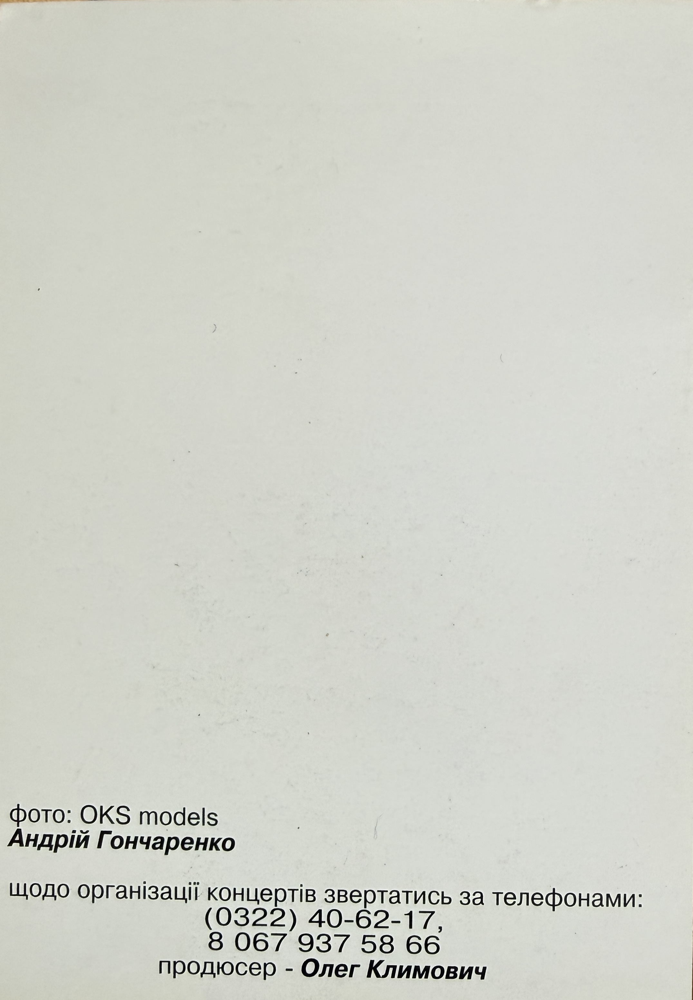

Promotional Card – Uliana Latyk

Basic Information
| Material Type | Promotional Card |
| Person Featured | Uliana Latyk |
| Current Stage Name | Ana Danch |
| Date / Year | Not identified in the preserved material |
| Language | Ukrainian |
| Archive Category | Photos / Promotional Material |
| Preserved Sides | Front and Back |
Description
This preserved promotional card features Uliana Latyk, now known professionally as Ana Danch.
The front side contains a professional portrait of Uliana Latyk against a yellow background. Her name is printed vertically on the image as «УЛЯНА ЛАТИК».
The reverse side preserves the printed photography credit «фото: OKS models / Андрій Гончаренко», contact telephone numbers for concert organization and a producer credit for Олег Климович.
No date or year is printed on the two preserved sides of the promotional material. For this reason, the archive does not assign a date by assumption.
The material is preserved as part of the visual documentation of Ana Danch’s early artistic career under her birth name, Uliana Latyk.
Archive Information
| Original Name | Uliana Latyk |
| Current Stage Name | Ana Danch |
| Archive Category | Photos / Promotional Material |
| Archive Material | Promotional Card |
| Printed Name | УЛЯНА ЛАТИК |
| Date / Year | Unknown |
| Preserved Material | Two-sided promotional card |
Credits
| Featured Person | Uliana Latyk, now known professionally as Ana Danch |
| Printed Photo Credit | OKS models / Andrii Honcharenko (Андрій Гончаренко) |
| Producer | Oleh Klymovych (Олег Климович) |
Source Information
| Source Type | Original Promotional Card |
| Person Named on Front | УЛЯНА ЛАТИК |
| Printed Photo Credit | фото: OKS models / Андрій Гончаренко |
| Concert Organization Telephone | (0322) 40-62-17 |
| Concert Organization Mobile | 8 067 937 58 66 |
| Producer Credit | продюсер - Олег Климович |
| Date / Year | Not printed on the preserved material |
| Publisher | Not identified in the preserved material |
| Printing House | Not identified in the preserved material |
Archive Materials
Front side of the promotional card featuring Uliana Latyk, now known professionally as Ana Danch.

Reverse side preserving the photography credit, concert organization contacts and producer credit.
Notes
The name Uliana Latyk represents the artist during an earlier period of her career. She is now known professionally as Ana Danch.
The subject is identified directly on the front of the original material by the printed name «УЛЯНА ЛАТИК».
The reverse side credits OKS models / Andrii Honcharenko (Андрій Гончаренко) in connection with the photograph and identifies Oleh Klymovych (Олег Климович) as producer.
The archive reproduces historical names, telephone numbers and other printed information as documentary evidence of the original promotional material. Their inclusion does not imply that the contact information remains current.
Because no date or year is visible on the preserved material, no chronological attribution has been added by assumption.